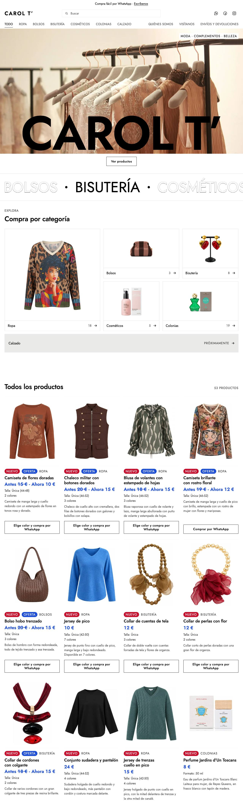
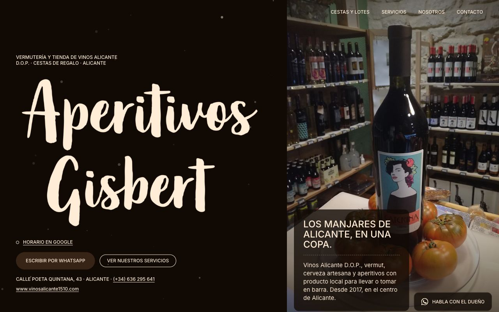
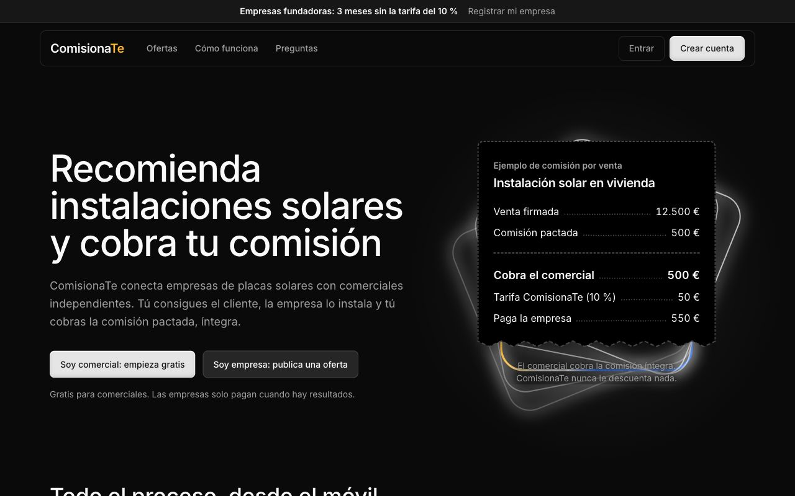
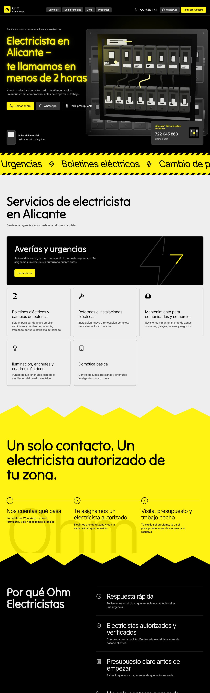

Desarrollador web
que crea webs para negocios reales
Soy Iván Ramos, de Alicante. Estudio Desarrollo de Aplicaciones Web y construyo páginas rápidas, claras y pensadas para quien las usa.
Ver mis proyectosQuién soy
De una idea en un papel a una página que alguien usa de verdad.


Alicante, España
Soy de Alicante y estudio el ciclo superior de Desarrollo de Aplicaciones Web. He hecho webs para negocios reales, como la tienda Carol T’ o la vinoteca Aperitivos Gisbert, y proyectos propios con Next.js, Astro, Java y Spring.
Antes de dedicarme al desarrollo trabajé en logística, hostelería y construcción. Ahí aprendí a ser constante, a trabajar en equipo y a mantener el ritmo cuando el trabajo aprieta, y esa misma actitud es la que aplico ahora a cada proyecto.
- HTML
- CSS
- JavaScript
- Astro
- React
- Next.js
- Tailwind
- Java
- Spring
- SQL
- Docker
Experiencia
Pasé por el almacén, la hostelería y la obra antes de llegar al código.
-
Desarrollador web · RamoStudio (se abre en una pestaña nueva)
Diseño, desarrollo y publicación de webs a medida para negocios locales: tiendas, vinotecas y servicios. Desde la primera propuesta hasta tener la web online.
2026 — Presente
-
Operario de almacén y logística · Musgrave España
Almacén de distribución alimentaria: recepción, ubicación y preparación de pedidos. Manejo de traspaleta eléctrica, torito y montacargas, y reparto con camión de hasta 3.500 kg.
Sep 2024 — Oct 2025
-
Operario en hostelería · Grupo Zena Pizza
Preparación de pedidos, atención al cliente, reparto a domicilio y gestión de caja en un entorno de alta rotación y ritmo exigente.
Ago 2022 — Nov 2024
-
Auxiliar en prevención y seguridad laboral · Segitec Seguridad y Salud
Apoyo en trabajos relacionados con la seguridad y la salud en obra.
Nov — Dic 2023
-
Repartidor y ayudante en hostelería · Manmar e Hijos Pizza
Reparto de comida a domicilio y apoyo en cocina y sala.
Nov 2021 — Mar 2022
-
Peón de construcción · Tabiques y Cubiertas Toledo
Tabiquería, cubierta y obra civil. Manejo de materiales y herramientas, y apoyo a los oficiales.
Nov 2020 — Jun 2021
Formación
Aprendiendo desarrollo web de forma reglada y con proyectos reales.
-
Técnico Superior en Desarrollo de Aplicaciones Web
Ciclo superior de DAW, en curso. Programación en Java, desarrollo web en cliente y en servidor, despliegue de aplicaciones y bases de datos.
2025 — Presente
-
Prevención de Riesgos Laborales (20 h) · Fundación Laboral de la Construcción
2021
-
Bachillerato y ESO
Completado
-
Español nativo e inglés B1
Carnets de conducir B y A2.
Idiomas
Proyectos
Webs para negocios reales y proyectos propios.
-
Carol T’
Tienda online de ropa, bolsos y bisutería de Alicante, con catálogo y compra por WhatsApp.

-
Aperitivos Gisbert
Web de una vinoteca de Alicante con cestas de regalo y vinos D.O.P. Catálogo sin precios y botón directo a WhatsApp.

-
ComisionaTe
Plataforma web que conecta a empresas de placas solares con comerciales a comisión. Proyecto propio con autenticación y base de datos.

-
Ohm Electricistas Web para un electricista autorizado de Alicante: urgencias, boletines y presupuesto por WhatsApp.

Contacto
¿Hablamos?
Si quieres saber más de mí o de mis proyectos, escríbeme.
contactoivan00@gmail.com